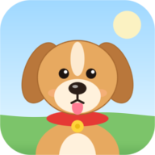
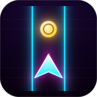

Мини-игры
Выбирай и играй. Каждую игру можно поставить на экран «Домой», работают без интернета.

Луи на прогулке Пёс Луи гуляет во дворе: ищет вкусняшки и игрушки, дружит с маленькими собачками и убегает от больших.
Neon Runner Неоновый раннер на три полосы. Уворачивайся от барьеров и собирай монеты.На iPhone: открой игру в Safari, нажми «Поделиться» и выбери «На экран Домой».